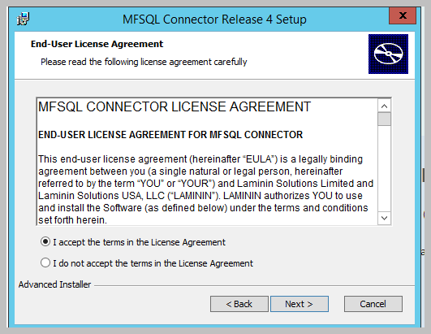
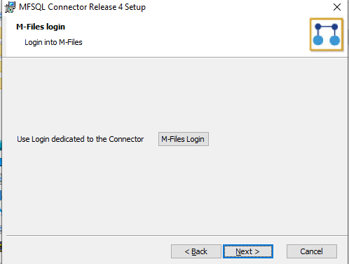

Standard Installation¶
This page relates to Release 4.3.9.71 and later with M-Files, and SQL on different servers in the same domain. The installation routine in the package of previous versions may vary slightly
Before executing the installation package¶
Confirm M-Files version 12.0.6400.0 or higher is installed
Confirm SQL Server is installed with mixed authentication mode enabled
Ensure M-Files Desktop Client is installed on the M-Files Server and SQL server
Copy Sample Vault to create a new test vault to prototype with the Connector, or use an existing vault
Install the package with windows administrator credentials.
Setup a dedicated M-Files User for the vault. It is recommended to use M-Files authentication. However specific windows user can also be used. Set user with vault admin rights. We recommend a user name that is easily identifiable as a Connector User such as MFSQLConnect
Connect to the M-Files server with the MFSQL User set to system administration credentials
Step by step installation Guide¶
1. Run Installation Package on the M-Files Server
2. Confirm the license agreement

3. Select installation folder.
We recommend to use the default. Selecting a different folder will require additional steps. The installation folder will contain the installation files for the specific to the Vault and Database being implemented. Accept default, or browse to desired folder
4. Select the installation mode and options.
The installation package facilitate installation either on premise or in the cloud.
The installation could be on a single server with both M-Files and SQL on the same server, or separate on a dual server configuration or on a workstation where neither M-Files nor SQL is installed. Installing the package on a workstation is only used for manual installations. Neither M-Files or SQL is accessed during a workstation installation, it merely puts the installation on the workstation, configured for manual deployment.
The final selection to make is if the installation is targeted for M-Files or SQL or Both at the same time.
The following selection scenarios would be invalid:
M-Files Cloud on a single server. A cloud installation would always be on a dual server or workstation only.
Installing Both M-Files and SQL at the same time on a dual server configuration. The installation must be run separately for M-Files and SQL.
The default selection is for on premise. The other options must be selected for the specific installation routine. Selecting nothing will perform no installation in either SQL or M-Files and merely put the installation files on the local machine.

5. Log into M-Files.
The selected options will determine if the package will prompt logging into M-Files.
Login into M-Files to connect the M-Files Vault. This interface will place a installation file on the local machine to recognize the installation credentials the next time when the installation is run on the local machine.
The credentials used as login will be used by MFSQL Connector to access the vault for all future operations. The credentials can be changed at any time using SSMS or by rerunning the installation package.
On occasion the M-Files login button is unresponsive, or crashes. This is likely because the installation references an vault that is no longer available or the installation history file is corrupt. In this case, simply remove the history file by deleting the entire folder: C:\Users\[windowsuser]\AppData\Local\MFSQL Vault Install.
Get the vault installation error log at C:\Users\[windowsuser]\AppData\Local\MFSQL Vault Install\ErrorLog.txt
On repeated installation on the same machine for the same vault and database does not require you to log into M-Files again. The settings will be picked up from the local machine. If multiple vaults are installed from the machine, or if it is the first time installation then logging in is required.

When selecting the login button on a new installation the following window will prompt for accessing the M-Files Server.
6. Enter credentials for M-Files Server
Use the user credentials that is designated for MFSQL Connector to log into the M-Files. This user should have M-Files System admin rights and Vault Admin rights. System admin right may be removed after the installation is completed.

6.1 Select another vault to log into.
After the first installation the package will automatically prompt for in the window to accept the previously used credentials or log into another vault.

7. Log into the vault.
Click the down arrow to select the vault, this will prompt with next window to log into the vault. Use the MFSQL user for the credentials.

8. Confirm M-Files login credentials.
After updating the connection to the vault, click next. The following window will show the credentials that will be applied in the installation.
Normally, this is for confirmation only. In some cases it may be necessary to enter or update the credentials in this window:
this is where the credentials are entered for a cloud installation.
when the current windows user was used to log into the vault, it would be necessary to enter the username and password again in this window
when the installation package are unable to use Powershell to access the installation settings, the user can reset the credentials in this window
9.Log into SQL Server and database.
Click next to open the SQL login window. Login into the SQL server with sysadmin credentials. The server name must include the SQL Server \ Instance. Add the server port if a non standard port are used.
Click show databases to verify the name of the MFSQL connector database. Alternatively, type in the new name of the target MFSQL Connector database. We recommend using MFSQL_ as the prefix and the name of the vault as the suffix.
The installation will automatically create the database if it does not exist.
Warning
Do not install MFSQL Connector into the M-Files SQL database. Always use a separate database with a distinct naming convention.
10. Installing.
The installation will proceed through a number of steps. On completion of the installation a message box is shown to remind you to take vault offline and bring back online before proceeding if the installation option is to install on the M-Files Server.

11. Validate SQL installation and vault connection.
If the installation option is selected for installing on the SQL server then a SQL installation validation will take place. If no errors are found then the following window will show.

12. SQL Errors.
Two types of errors may be reported.
Unable to connect to the M-Files Server. If this happens, check the credentials, and rerun the package installations
Assemblies are unable to install. Contact support. This is indicative of a underlying issue with the installation.
13. Finish.
If no errors are found, finish the installation of the package.

14. Configure M-Files server
In the case of selecting to option for an M-Files server installation, additional steps are required to complete the installation. Use M-Files Admin to complete the following on the M-Files Server.
Access the Applications window using M-Files Admin. The following configuration should be apparent in the Vault
The Vault application: MFSQL Connector Vault App. Take the vault offline and back online to complete the installation of the vault application.
15. License to product.
Refer to section on Licensing Management for further detail on licensing the applications.
16. Install contextmenu functionality
Activate the context menu with the Content Package installation
17. Perform manual installation.
To perform a manual installation refer to Manual installation using scripts